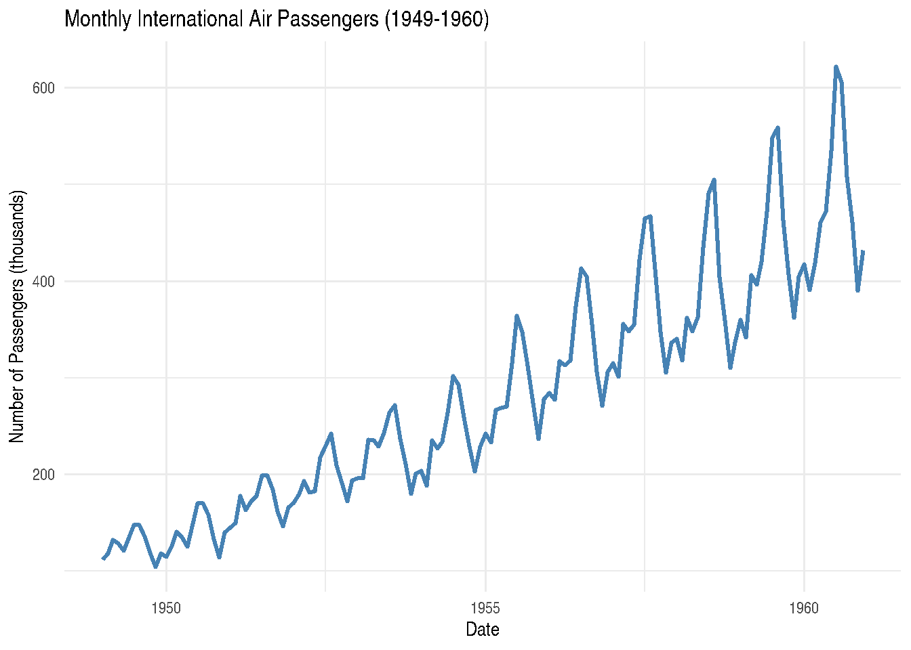
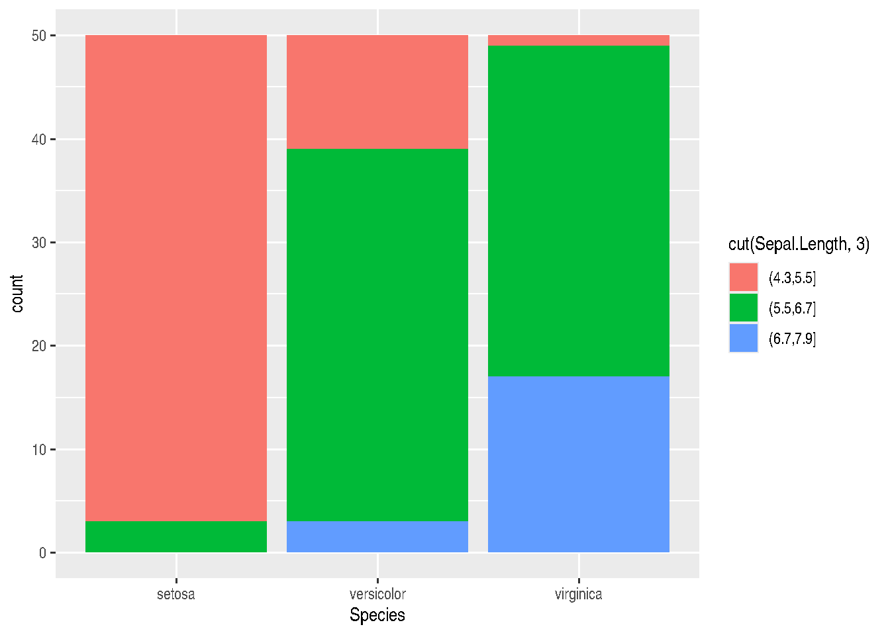
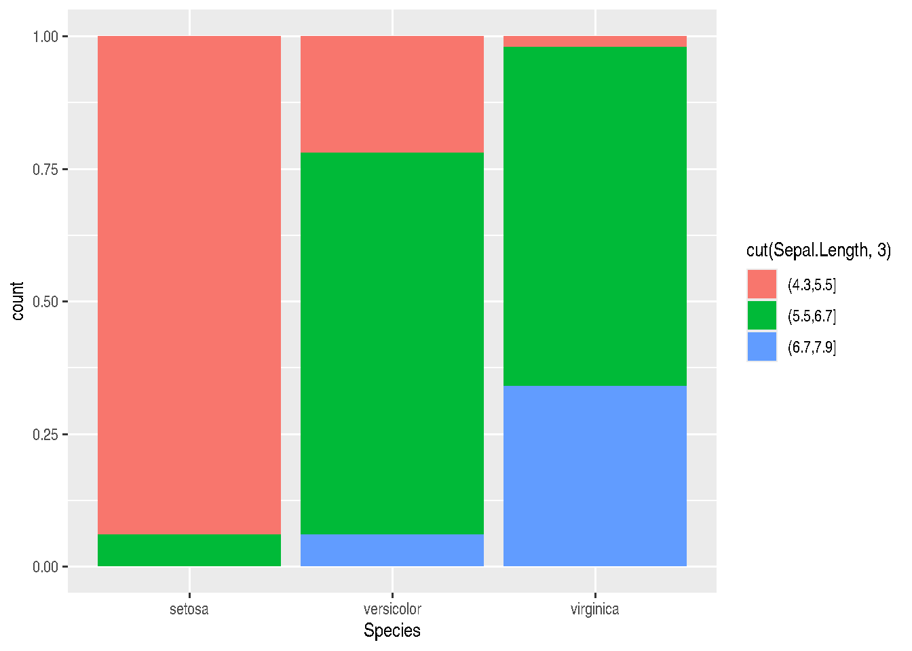
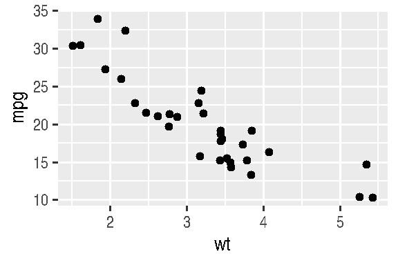

2 Module II
2.1 Reading Data in R
So far, we’ve been working by creating objects from data entered via script or console. However, the most common practice when doing data analysis is to read data from external sources, such as a .txt or .csv file, a relational database (SQL) on our company’s server, or even from web pages. In this section, we’ll see how to read databases stored locally on the computer.
I often say that in R, there are always at least 3 different ways to perform the same task. When it comes to reading data, this is no different, since R has several packages for data reading; some focus on speed, others on practicality, and still others are made specifically to handle massive databases. Regarding this last aspect, it must be recognized that R doesn’t have memory management that allows users to load very large databases (around 10 million rows or so). This is, in a way, intentional, since R was created to make life easier for users dealing with data analysis. But it should be noted that, due to its extremely active community, several packages have been and continue to be developed with the aim of improving how R handles object storage in memory.
In this course, we’ll focus on using the readr package, as we understand it to be a middle ground between practicality and speed, considering the alternatives from base R and similar but much faster functions, such as those available in the data.table, vroom packages, among others.
2.1.1 The Tidyverse
readr is part of a collection of packages called Tidyverse.
“The tidyverse is a set of packages that work in harmony because they share common data representations and API design. The tidyverse package is designed to make it easy to install and load core packages from the tidyverse in a single command.” * Hadley Wickham *
Tidyverse Hexsticker
We can define the Tidyverse, then, as a meta-package that brings together a collection of several other R packages aimed at importing, exploring, manipulating, and visualizing data. They range from packages for string manipulation, regular expressions, dates, through reading and import packages, data manipulation and visualization, to report generation and web page creation, among other things.
These packages seek to provide greater standardization and ease in dealing with data in R.
2.1.2 Reading and Exporting Data using readr
The goal of the readr package is to make reading rectangular/tabular databases (csv, txt, and fwf) in R easier and more user-friendly. Compared to base R alternatives, readr is smarter in the sense of trying to guess column formats, while still allowing, if necessary, user specification of patterns.
The most important reading functions in the package are:
read_csv(): reads.csvor.txtfiles in American format, where the column separator is a comma;read_csv2(): reads.csvor.txtfiles in European format, where the column separator is a semicolon;read_tsv(): reads.csvor.txtfiles, where the column separator is tab\t;read_table(): reads.txtfiles, where the column separator is whitespace;read_delim(): allows reading files of various extensions, where the user can specify the delimiter through thedelimparameter.
Let’s practice using data from the UCI Wine Quality Dataset. You can download the data. However, since our goal is to create the reading experience, we’ll use this LINK. Once on the page, you can save it to your computer by right-clicking and then clicking Save as.
Note that the data is in a .csv file in semicolon-separated format.
Let’s read the file that was saved on our computer.
TIP: On your computer, the file path will be different.
library(readr)
wine_data <- read_csv2(file="C:\\Users\\...\\winequality-red.csv")
# or using the more generic function
wine_data <- read_delim(file="C:\\Users\\...\\winequality-red.csv",
delim = ";")If you don’t want to save the database on your computer, reading the file directly from the website, you can also do that. Just copy the file address shown in the browser and pass it to the file argument. Paths passed to the file argument starting with http://, https://, ftp://, or ftps:// result in automatic download and reading of the file.
## ℹ Using "','" as decimal and "'.'" as grouping mark. Use `read_delim()` for more control.## Warning: One or more parsing issues, call `problems()` on your data frame for details, e.g.:
## dat <- vroom(...)
## problems(dat)## Rows: 1599 Columns: 12## ── Column specification ──────────────────────────────────────────────────────────────────────────────
## Delimiter: ";"
## chr (5): volatile acidity, citric acid, chlorides, density, sulphates
## dbl (2): total sulfur dioxide, quality
## num (5): fixed acidity, residual sugar, free sulfur dioxide, pH, alcohol
##
## ℹ Use `spec()` to retrieve the full column specification for this data.
## ℹ Specify the column types or set `show_col_types = FALSE` to quiet this message.Once the file is read, the functions print to the console the names of each column and the ways they were read. This allows the user to check if everything went well during reading. If any column wasn’t read in the format you expected, just copy the output and run the function again, changing the specification of that particular column.
For example, let’s change the quality column from double (which takes up more memory) to be read as an integer. We make this specification in the col_types argument.
wine_data <- read_csv2(file="https://archive.ics.uci.edu/ml/machine-learning-databases/wine-quality/winequality-red.csv",
col_types = cols(
`fixed acidity` = col_double(),
`volatile acidity` = col_double(),
`citric acid` = col_double(),
`residual sugar` = col_double(),
chlorides = col_double(),
`free sulfur dioxide` = col_double(),
`total sulfur dioxide` = col_double(),
density = col_double(),
pH = col_double(),
sulphates = col_double(),
alcohol = col_double(),
quality = col_integer()
)
)## ℹ Using "','" as decimal and "'.'" as grouping mark. Use `read_delim()` for more control.## Warning: One or more parsing issues, call `problems()` on your data frame for details, e.g.:
## dat <- vroom(...)
## problems(dat)Once the file is read, we can inspect it by calling the created object, or by clicking on the object name in our environment.
wine_data## # A tibble: 1,599 × 12
## `fixed acidity` `volatile acidity` `citric acid` `residual sugar` chlorides `free sulfur dioxide`
## <dbl> <dbl> <dbl> <dbl> <dbl> <dbl>
## 1 NA NA 0 NA NA 11
## 2 NA NA 0 NA NA 25
## 3 NA NA NA NA NA 15
## 4 NA NA NA NA NA 17
## 5 NA NA 0 NA NA 11
## 6 NA NA 0 NA NA 13
## 7 NA NA NA NA NA 15
## 8 NA NA 0 NA NA 15
## 9 NA NA NA 2 NA 9
## 10 NA NA NA NA NA 17
## # ℹ 1,589 more rows
## # ℹ 6 more variables: `total sulfur dioxide` <dbl>, density <dbl>, pH <dbl>, sulphates <dbl>,
## # alcohol <dbl>, quality <int>Note that this file doesn’t look much like the classic Dataframe format we saw in Module 1. It’s actually a new type of object, which follows the Tidyverse philosophy, commented on in the previous section. We have here a tibble, which is nothing more than a friendlier Dataframe. In general terms, the difference between a classic Dataframe and a tibble is mainly in the information presented to us when we print the object’s content to the console. Unlike a Dataframe, a tibble shows us only the first 10 rows of the table, the column types, and only the content of columns that fit on our screen.
Another difference is in the result when we perform indexing. We can still use [row_index, column_index] or dataframe_name$column_name. The thing is that indexing with brackets will return a tibble, even if the operation results in a single column. Indexing via $ will return a vector. In summary, the first doesn’t change the object type - we continue with a tibble. The second changes the object type.
Test this in practice:
wine_data[,"quality"] # or wine_data[,12]
wine_data$qualityOther advantages of tibble are:
- we no longer need to worry about
stringsAsFactors=FALSE; - it works much more fluidly with the other tidyverse packages we’ll use later in the course;
2.1.2.1 Alternatives
When it comes to reading data, there are many alternatives in R. Although not within the scope of this course, we suggest you study how the read.table() family functions from base R work. These functions are slower than readr package functions, but offer greater flexibility regarding parameter specification.
Regarding large databases, with millions of observations, we suggest the fread() function from the data.table package. But this speed comes with the price of having to learn a slightly different programming paradigm, even though it’s within R.
Many people are also interested in reading data from Excel spreadsheets or sheet tabs in .xls and .xlsx formats. Although it’s not the most appropriate way to store data, it’s worth knowing there’s an alternative for reading Excel data. Read about the readxl package and the read_excel() function.
2.1.3 Writing and exporting data
Despite its name, the readr package also has functions for writing data. To export the results of our analyses in R to a table with .txt or .csv extension, for example, we’ll use functions very similar to reading ones, changing only the prefixes from read to write. The suffixes, again, will depend on the type of file you want to save.
The most used functions are: write_csv(); write_csv2; write_table(); and write_delim().
Let’s modify the wine_data file and then export the new version as a new .csv file in European format. Using the knowledge about object indexing from Module 1, let’s replace the first 500 rows of the quality column to 8, and eliminate a column.
1) changing the quality
wine_data[1:500, "quality"] <- rep(8, 500)
# or
wine_data[1:500, 12] <- rep(8, 500)
# or
wine_data$quality[1:500] <- rep(8, 500)2) excluding the first column
In R, we have a word reserved by the language that transforms objects or object elements into empty. It’s the word NULL.
wine_data[, "fixed acidity"] <- NULL# or
wine_data[, 1] <- NULL
# or
wine_data_modified <- wine_data[, 2:ncol(wine_data)]
# we replace the complete version of the tibble with a version that brings...
#...only data from column 2 onwards3) saving the new tibble in a file
write_csv2(x=wine_data,
path="C://path//...//wine_data_modified.csv")
# or
write_delim(x=wine_data,
path="C://path//...//wine_data_modified.csv",
delim=";")TIP: It’s very common to have doubts about what the parameters of a function are and how it works. Don’t forget to always consult R’s Help, or type the function_name in the Console to see all its parameters.
2.1.4 Reading data from Stata, SAS and SPSS
We’ve seen that in these 20 years of history, R has grown considerably. During this time, several researchers and professionals from various areas migrated to R, mainly from Stata, SAS, and SPSS. When facing the cost of change, many people encounter the challenge of “translating” their scripts from one language to another, as well as reading data written or stored in extensions used by those languages.
R’s standard installation already offers a library to read databases from other languages. The package name makes perfect sense: foreign. It brings several functions that make importing simple. Additionally, installing and using the Hmisc package is also recommended.
Below, we present just some ideas on how to handle “foreign” datasets in R:
- SPSS:
# saving the dataset in SPSS in transport format (XPORT)
get file='C:/my_data.sav'.
export outfile='C:/my_data.por'.# in R
# install.packages("Hmisc") # if necessary
library(Hmisc)
df <- spss.get("C:/my_SPSS_data.por", use.value.labels=TRUE)
# use.value.labels=TRUE converts label values to factors- SAS:
# save the SAS dataset in transport format (XPORT)
libname out xport 'C:/my_SAS_data.xpt';
data out.mydata;
set sasuser.mydata;
run;# in R
library(Hmisc)
mydata <- sasxport.get("C:/my_SAS_data.xpt")
# character type variables will be converted to factors- Stata:
library(foreign)
mydata <- read.dta("C:/my_stata_data.dta")2.1.5 Section References
Quick R website. (2020). URL https://www.statmethods.net/.
Wickham, H.; Hester, J.; François R. (2018). readr: Read Rectangular Text Data. R package version 1.3.1. URL https://CRAN.R-project.org/package=readr.
____. (2020). readr official website. URL https://readr.tidyverse.org/index.html.
Wickham, H.; Grolemund, G. (2016). R for Data Science: Import, Tidy, Transform, Visualize, and Model Data. O’Reilly Media. december 2016. 522 pages. Available at: https://www.r4ds.co.nz.
2.2 Data Manipulation with dplyr
In this section, we’ll cover the dplyr package, which is one of the most important packages in the tidyverse collection. It brings a specific “grammar” of data manipulation, providing a set of functions that help solve the most common challenges in data manipulation. The goal is for you to become familiar with dplyr package functions; with the tasks they perform; and see examples of how to apply them to data.frames.
As the package authors themselves point out, when we work with data, we need to:
Discover what we want to do;
Describe these tasks in the form of a computer program;
Execute the program.
The dplyr package makes these steps faster and easier to execute, because:
instead of providing a multitude of functions, like we have in base R and other packages, it restricts our options and thereby helps us think more directly about what we want and can do with the data;
provides simpler “verbs” (or functions), i.e., functions that correspond to the most common data manipulation tasks, helping us translate thoughts into code;
uses efficient backends (end-process codes, i.e., closer to the user), so we spend less time waiting for the computer.
The dplyr package provides a function for each “verb” considered important in data manipulation:
filter()to select “cases” based on their values;arrange()to reorder “cases”;select()and rename() to select variables based on their names;mutate()andtransmute()to add new variables that are functions of variables already existing in the data;summarise()orsummarize()to condense multiple values into a single one;group_by()although not considered one of the “verbs”, serves to group data around one or more variables. Functions considered “verbs” can be used before or after data grouping.
We’ll now see some examples of applying these functions.
Let’s use a different dataset now. We’ll use the built-in mtcars dataset that comes with R, which contains information about car models.
library(dplyr)
# Load the mtcars dataset
cars_data <- as_tibble(mtcars)
dim(cars_data)## [1] 32 11Note that by print we again have a tibble, which is a modern form of data.frame implemented by the tidyverse folks. This format is particularly useful for large datasets because only the first lines and various summaries/information about our variables are printed on screen. To convert data.frames to tibbles, we use as_tibble().
2.2.1 Filtering rows with filter()
filter() allows making a subset of rows from a tibble/dataframe. Like all simple verbs in dplyr, the first argument will be a tibble (or data.frame). The second argument and subsequent ones refer to variables within the data.frame, where rows are selected where the expression is true (TRUE).
Let’s select all rows where miles per gallon (mpg) is greater than 20 and the number of cylinders is 4:
filter(cars_data, mpg > 20, cyl == 4)## # A tibble: 11 × 11
## mpg cyl disp hp drat wt qsec vs am gear carb
## <dbl> <dbl> <dbl> <dbl> <dbl> <dbl> <dbl> <dbl> <dbl> <dbl> <dbl>
## 1 22.8 4 108 93 3.85 2.32 18.6 1 1 4 1
## 2 24.4 4 147. 62 3.69 3.19 20 1 0 4 2
## 3 22.8 4 141. 95 3.92 3.15 22.9 1 0 4 2
## 4 32.4 4 78.7 66 4.08 2.2 19.5 1 1 4 1
## 5 30.4 4 75.7 52 4.93 1.62 18.5 1 1 4 2
## 6 33.9 4 71.1 65 4.22 1.84 19.9 1 1 4 1
## 7 21.5 4 120. 97 3.7 2.46 20.0 1 0 3 1
## 8 27.3 4 79 66 4.08 1.94 18.9 1 1 4 1
## 9 26 4 120. 91 4.43 2.14 16.7 0 1 5 2
## 10 30.4 4 95.1 113 3.77 1.51 16.9 1 1 5 2
## 11 21.4 4 121 109 4.11 2.78 18.6 1 1 4 2TIP: In base R, this would be equivalent to the code: cars_data[cars_data$mpg > 20 & cars_data$cyl == 4, ].
2.2.2 Ordering rows with arrange()
arrange() works similarly to filter, but instead of filtering and selecting rows, it just reorders them according to some condition we pass. This function takes a data.frame and a set of column names by which it will sort. If you provide more than one column name, each additional column passed will be used as a tiebreaker.
arrange(cars_data, cyl, mpg, hp)## # A tibble: 32 × 11
## mpg cyl disp hp drat wt qsec vs am gear carb
## <dbl> <dbl> <dbl> <dbl> <dbl> <dbl> <dbl> <dbl> <dbl> <dbl> <dbl>
## 1 21.4 4 121 109 4.11 2.78 18.6 1 1 4 2
## 2 21.5 4 120. 97 3.7 2.46 20.0 1 0 3 1
## 3 22.8 4 108 93 3.85 2.32 18.6 1 1 4 1
## 4 22.8 4 141. 95 3.92 3.15 22.9 1 0 4 2
## 5 24.4 4 147. 62 3.69 3.19 20 1 0 4 2
## 6 26 4 120. 91 4.43 2.14 16.7 0 1 5 2
## 7 27.3 4 79 66 4.08 1.94 18.9 1 1 4 1
## 8 30.4 4 75.7 52 4.93 1.62 18.5 1 1 4 2
## 9 30.4 4 95.1 113 3.77 1.51 16.9 1 1 5 2
## 10 32.4 4 78.7 66 4.08 2.2 19.5 1 1 4 1
## # ℹ 22 more rowsIf you want to sort in descending order, use the desc(column_name) function inside arrange(). This would be particularly interesting if you wanted to sort data in the final column from highest to lowest.
2.2.3 Selecting columns with select()
We usually work with large datasets with many columns, but only a few columns will be of interest. select() allows us to quickly focus on a subset of the data. The best part is that we can use operations - which normally only work with column positions - directly on variable names.
# Selection by name
select(cars_data, mpg, cyl, hp)## # A tibble: 32 × 3
## mpg cyl hp
## <dbl> <dbl> <dbl>
## 1 21 6 110
## 2 21 6 110
## 3 22.8 4 93
## 4 21.4 6 110
## 5 18.7 8 175
## 6 18.1 6 105
## 7 14.3 8 245
## 8 24.4 4 62
## 9 22.8 4 95
## 10 19.2 6 123
## # ℹ 22 more rows# Selecting all columns in a range (inclusive)
select(cars_data, mpg:wt)## # A tibble: 32 × 6
## mpg cyl disp hp drat wt
## <dbl> <dbl> <dbl> <dbl> <dbl> <dbl>
## 1 21 6 160 110 3.9 2.62
## 2 21 6 160 110 3.9 2.88
## 3 22.8 4 108 93 3.85 2.32
## 4 21.4 6 258 110 3.08 3.22
## 5 18.7 8 360 175 3.15 3.44
## 6 18.1 6 225 105 2.76 3.46
## 7 14.3 8 360 245 3.21 3.57
## 8 24.4 4 147. 62 3.69 3.19
## 9 22.8 4 141. 95 3.92 3.15
## 10 19.2 6 168. 123 3.92 3.44
## # ℹ 22 more rows# Selecting all columns except those in a range (inclusive)
select(cars_data, -(mpg:wt))## # A tibble: 32 × 5
## qsec vs am gear carb
## <dbl> <dbl> <dbl> <dbl> <dbl>
## 1 16.5 0 1 4 4
## 2 17.0 0 1 4 4
## 3 18.6 1 1 4 1
## 4 19.4 1 0 3 1
## 5 17.0 0 0 3 2
## 6 20.2 1 0 3 1
## 7 15.8 0 0 3 4
## 8 20 1 0 4 2
## 9 22.9 1 0 4 2
## 10 18.3 1 0 4 4
## # ℹ 22 more rowsTIP: There are helper functions we can use inside select(). They are functions that resemble the functioning of a regular expression (a concept we’ll see in Module 3) to identify column names that meet a certain criterion. They’re very useful with large datasets: starts_with(), ends_with(), matches() and contains().
Let’s for example select all columns that start with “d”:
select(cars_data, starts_with("d"))## # A tibble: 32 × 2
## disp drat
## <dbl> <dbl>
## 1 160 3.9
## 2 160 3.9
## 3 108 3.85
## 4 258 3.08
## 5 360 3.15
## 6 225 2.76
## 7 360 3.21
## 8 147. 3.69
## 9 141. 3.92
## 10 168. 3.92
## # ℹ 22 more rowsselect() can even be used to rename variables:
select(cars_data, miles_per_gallon = mpg)## # A tibble: 32 × 1
## miles_per_gallon
## <dbl>
## 1 21
## 2 21
## 3 22.8
## 4 21.4
## 5 18.7
## 6 18.1
## 7 14.3
## 8 24.4
## 9 22.8
## 10 19.2
## # ℹ 22 more rowsThe new variable will be called miles_per_gallon and will receive all information from the original mpg.
However, select() “abandons” all other variables when you do a renaming. It’s better then to use rename():
rename(cars_data, miles_per_gallon = mpg)## # A tibble: 32 × 11
## miles_per_gallon cyl disp hp drat wt qsec vs am gear carb
## <dbl> <dbl> <dbl> <dbl> <dbl> <dbl> <dbl> <dbl> <dbl> <dbl> <dbl>
## 1 21 6 160 110 3.9 2.62 16.5 0 1 4 4
## 2 21 6 160 110 3.9 2.88 17.0 0 1 4 4
## 3 22.8 4 108 93 3.85 2.32 18.6 1 1 4 1
## 4 21.4 6 258 110 3.08 3.22 19.4 1 0 3 1
## 5 18.7 8 360 175 3.15 3.44 17.0 0 0 3 2
## 6 18.1 6 225 105 2.76 3.46 20.2 1 0 3 1
## 7 14.3 8 360 245 3.21 3.57 15.8 0 0 3 4
## 8 24.4 4 147. 62 3.69 3.19 20 1 0 4 2
## 9 22.8 4 141. 95 3.92 3.15 22.9 1 0 4 2
## 10 19.2 6 168. 123 3.92 3.44 18.3 1 0 4 4
## # ℹ 22 more rows2.2.4 Adding new columns with mutate()
In addition to selecting sets of existing columns, it’s generally useful to add new columns that are functions of columns already present in the tibble/dataframe. See an example with mutate(), where we want to calculate the power-to-weight ratio:
mutate(cars_data,
power_to_weight = hp / wt
)## # A tibble: 32 × 12
## mpg cyl disp hp drat wt qsec vs am gear carb power_to_weight
## <dbl> <dbl> <dbl> <dbl> <dbl> <dbl> <dbl> <dbl> <dbl> <dbl> <dbl> <dbl>
## 1 21 6 160 110 3.9 2.62 16.5 0 1 4 4 42.0
## 2 21 6 160 110 3.9 2.88 17.0 0 1 4 4 38.3
## 3 22.8 4 108 93 3.85 2.32 18.6 1 1 4 1 40.1
## 4 21.4 6 258 110 3.08 3.22 19.4 1 0 3 1 34.2
## 5 18.7 8 360 175 3.15 3.44 17.0 0 0 3 2 50.9
## 6 18.1 6 225 105 2.76 3.46 20.2 1 0 3 1 30.3
## 7 14.3 8 360 245 3.21 3.57 15.8 0 0 3 4 68.6
## 8 24.4 4 147. 62 3.69 3.19 20 1 0 4 2 19.4
## 9 22.8 4 141. 95 3.92 3.15 22.9 1 0 4 2 30.2
## 10 19.2 6 168. 123 3.92 3.44 18.3 1 0 4 4 35.8
## # ℹ 22 more rowsmutate() even allows us to refer to columns we just created in the same command. Let’s save this change in a new tibble, called cars_data2
cars_data2 <- mutate(cars_data,
power_to_weight = hp / wt,
power_to_weight_scaled = power_to_weight * 100
)If we’re only interested in the new variables, we would use transmute():
transmute(cars_data,
power_to_weight = hp / wt,
power_to_weight_scaled = power_to_weight * 100
)## # A tibble: 32 × 2
## power_to_weight power_to_weight_scaled
## <dbl> <dbl>
## 1 42.0 4198.
## 2 38.3 3826.
## 3 40.1 4009.
## 4 34.2 3421.
## 5 50.9 5087.
## 6 30.3 3035.
## 7 68.6 6863.
## 8 19.4 1944.
## 9 30.2 3016.
## 10 35.8 3576.
## # ℹ 22 more rows2.2.5 Modifying entries with mutate() or transmute() + case_when()
case_when() is a function from the dplyr package that allows us to modify variables from a sequence of conditions that must be respected.
IF CONDITION1 TRUE ~ DO SUCH THING;
ELSE ~ DO ANOTHER THINGIt replaces R’s native conditional structures (ifelse() function) and is inspired by the equivalent statement in SQL CASE WHEN. The arguments of the case_when() function follow the following structure: conditional operation ~ new value. On the left side of ~, you have the comparison to be made. On the right side, we have the new value to be assigned if the comparison result is TRUE. You can even handle more than one condition, as long as you go from the most specific case to the most general.
case_when(
condition1 ~ "new_value1",
condition2 ~ "new_value2",
condition3 ~ "new_value3",
TRUE ~ "value for other cases not met by conditions above"
)Generally, in the context of data analysis with dplyr, we use case_when() inside a mutate() or transmute function (which brings only the newly created column), since we intend to change column entries, thus changing the column itself.
In the cars_data2 tibble, let’s create a new character column called efficiency_level, where we’ll classify efficiency as: high if mpg > 20; low if mpg < 15 or moderate in other cases:
transmute(cars_data2,
efficiency_level =
case_when(
mpg > 20 ~ "high",
mpg < 15 ~ "low",
TRUE ~ "moderate"
))## # A tibble: 32 × 1
## efficiency_level
## <chr>
## 1 high
## 2 high
## 3 high
## 4 high
## 5 moderate
## 6 moderate
## 7 low
## 8 high
## 9 high
## 10 moderate
## # ℹ 22 more rowsTIP: If newly created column values are displayed in exponential (scientific) notation, run the code below to force decimal places to be displayed in conventional mode and then print the columns again.
# scipen is a kind of penalty for using exponential notation values
# positive values penalize exponential notation display
# negative values penalize fixed/regular notation display
options(scipen=999)2.2.6 Summarizing values with summarise()
The last dplyr “verb” is summarise() (or summarize). It collapses a tibble/dataframe into a single row.
summarise(cars_data2,
mean_mpg = mean(mpg, na.rm = TRUE)
)## # A tibble: 1 × 1
## mean_mpg
## <dbl>
## 1 20.1TIP: The na.rm = TRUE parameter inside the mean() function makes it disregard missing values (NA) when calculating the mean. Otherwise, in the existence of missing values NA, the function will always return NA. This also applies to other vectorized mathematical functions, like sum(), for example.
Depending on your goal, it may be more useful to use the “verb” group_by() which we’ll see later. With it we can calculate the average by category, i.e., by number of cylinders, transmission type, etc.
2.2.7 dplyr Structure
Note that the syntax and functioning of all dplyr verbs presented so far are quite similar:
the first argument is a tibble/dataframe;
subsequent arguments describe what to do with the data. We can refer to tibble/dataframe columns directly without the need to use
$or[]indexing.the result is a new tibble/dataframe.
Together, these properties make it easy to chain multiple simple steps to achieve a complex result. The rest of what dplyr does comes from applying the 5 functions we’ve seen so far to different types of data. Instead of working with disaggregated data, we’ll now start working with data grouped by one or more variables.
2.2.7.1 Grouped operations
The dplyr verbs become even more powerful when we apply them to groups of observations within a dataset. We do this with the group_by() function. It “breaks” the dataset into specific groups of rows. At first, we don’t see any change. It’s as if they stay in the background. However, when we apply any of the main verbs to the dataset “altered” by group_by, they will automatically be applied by group or “by group”.
Using grouping affects the result of main verbs as follows:
grouped
select()is the same as ungrouped, except that grouping variables are always preserved.grouped
arrange()is the same as ungrouped, unless we use.by_group = TRUE, in which case it sorts first by grouping variables;mutate()andfilter()are quite useful together with window functions (likerank()ormin(x) == x) (Seedplyr“window-functions” vignette);summarise()calculates the summary for each group.
In the following example, we separate the dataset by cyl, counting the number of records for each number of cylinders (count = n()), computing the average miles per gallon by cylinder group (mean_mpg = mean(mpg, na.rm = TRUE)).
by_cyl <- group_by(cars_data2, cyl)
summary_by_cyl <- summarise(
by_cyl,
count = n(),
mean_mpg = mean(mpg, na.rm = TRUE)
)
summary_by_cyl## # A tibble: 3 × 3
## cyl count mean_mpg
## <dbl> <int> <dbl>
## 1 4 11 26.7
## 2 6 7 19.7
## 3 8 14 15.1Note that summarise() is normally used with aggregate functions, which take a vector of values and return a single number. There are many useful examples from base R that can be used, such as min(), max(), mean(), sum(), sd(), median(), etc. dplyr provides some other very useful ones:
n(): number of observations in the current group;n_distinct(x): number of unique values in x;first(x),last(x)andnth(x, n)work similarly tox[1],x[length(x)]andx[n], but give us more control over the result if any value is missing.
See an example where we use these functions to find the number of distinct transmission types for each cylinder group and total number of cars:
by_cyl_am <- group_by(cars_data2, cyl)
summarise(by_cyl_am,
n_transmission_types = n_distinct(am),
total_cars = n()
)## # A tibble: 3 × 3
## cyl n_transmission_types total_cars
## <dbl> <int> <int>
## 1 4 2 11
## 2 6 2 7
## 3 8 2 14When we group more than one variable, each summarise() we execute eliminates one level of grouping.
Example:
by_cyl_am <- group_by(cars_data2, cyl, am)
(summary_by_am <- summarise(by_cyl_am, count = n()))## `summarise()` has grouped output by 'cyl'. You can override using the `.groups` argument.## # A tibble: 6 × 3
## # Groups: cyl [3]
## cyl am count
## <dbl> <dbl> <int>
## 1 4 0 3
## 2 4 1 8
## 3 6 0 4
## 4 6 1 3
## 5 8 0 12
## 6 8 1 2# note that from the "Groups:" description of the tibble, i.e., the number of grouping variables decreases
(summary_by_cyl <- summarise(summary_by_am, count = sum(count)))## # A tibble: 3 × 2
## cyl count
## <dbl> <int>
## 1 4 11
## 2 6 7
## 3 8 142.2.7.2 Care with variable names
One of the best features of the dplyr package is that we can refer to variables in a tibble or dataframe as if they were regular variables (those in the Global Environment). However, the reference syntax for column names hides some differences between verbs. For example, a column name or value passed to select() doesn’t have the same meaning as it would in mutate().
See equivalent forms from dplyr’s point of view:
select(cars_data2, mpg)## # A tibble: 32 × 1
## mpg
## <dbl>
## 1 21
## 2 21
## 3 22.8
## 4 21.4
## 5 18.7
## 6 18.1
## 7 14.3
## 8 24.4
## 9 22.8
## 10 19.2
## # ℹ 22 more rowsselect(cars_data2, 1)## # A tibble: 32 × 1
## mpg
## <dbl>
## 1 21
## 2 21
## 3 22.8
## 4 21.4
## 5 18.7
## 6 18.1
## 7 14.3
## 8 24.4
## 9 22.8
## 10 19.2
## # ℹ 22 more rowsIf there’s a variable in the Global Environment with the same name as a column in our tibble/dataframe, dplyr will prioritize the variable that’s in the tibble.
mpg <- 5
select(cars_data2, mpg)## # A tibble: 32 × 1
## mpg
## <dbl>
## 1 21
## 2 21
## 3 22.8
## 4 21.4
## 5 18.7
## 6 18.1
## 7 14.3
## 8 24.4
## 9 22.8
## 10 19.2
## # ℹ 22 more rowsThis behavior only applies to “raw” names and selection calls like select(tibble, var1, var2, var3) or var1:var3. In all other cases, tibble column names are preferred over “loose” variables in the Global Environment.
var1 <- "c"
select(cars_data2, starts_with(var1))## # A tibble: 32 × 2
## cyl carb
## <dbl> <dbl>
## 1 6 4
## 2 6 4
## 3 4 1
## 4 6 1
## 5 8 2
## 6 6 1
## 7 8 4
## 8 4 2
## 9 4 2
## 10 6 4
## # ℹ 22 more rowsNote that in this last case, dplyr looked at the content of the var1 variable and not the literal variable name.
2.2.8 Using the Pipe %>%
dplyr is functional in the sense that function calls have no side effects. That is, you always need to save your results. This makes our code not so elegant, especially when we’re going to do several operations, one at a time:
# grouping by cyl, am
level1 <- group_by(cars_data2, cyl, am)
# selecting only columns mpg, hp, power_to_weight
level2 <- select(level1, mpg, hp, power_to_weight)
# calculating total car count and average horsepower by group
level3 <- summarise(level2,
total_cars = n(),
avg_hp = mean(hp, na.rm = TRUE)
)
# filtering groups with car count above 5
level4 <- filter(level3, total_cars > 5)Note that there are many intermediate results we’re saving, when actually we’d only be interested in the final one. To solve this we could call one function inside another:
filter(
summarise(
select(
group_by(cars_data2, cyl, am),
mpg, hp, power_to_weight
),
total_cars = n(),
avg_hp = mean(hp, na.rm = TRUE)
),
total_cars > 5
)Although it solves the problem of saving intermediate objects, this approach is difficult to read the steps because the order of operations goes from inside to outside. So, arguments end up being far from the function itself. To give an elegant solution to the problem, dplyr uses the pipe operator %>% from the magrittr package. x %>% f() is equivalent to f(x). So, we can use this operator to rewrite multiple operations that we can read from left to right and top to bottom. It’s as if each line of code functioned as a distinct department of a company. Production begins on the first line. Once changes in this first department are finished, the unfinished product (data) is “thrown” to the department below via the pipe, where production continues. From there it goes to the next department, and so on until all data changes have been made.
cars_data2 %>%
group_by(cyl, am) %>%
select(mpg, hp, power_to_weight) %>%
summarise(
total_cars = n(),
avg_hp = mean(hp, na.rm = TRUE)
) %>%
filter(total_cars > 5)## Adding missing grouping variables: `cyl`, `am`
## `summarise()` has grouped output by 'cyl'. You can override using the `.groups` argument.## # A tibble: 2 × 4
## # Groups: cyl [2]
## cyl am total_cars avg_hp
## <dbl> <dbl> <int> <dbl>
## 1 4 1 8 81.9
## 2 8 0 12 194.TIP: Note that the tibble or dataframe name only needs to be informed once at the beginning of the process.
2.2.9 Section References
Wickham H.; François, R.; Henry, L.; Müller K. (2019). dplyr: A Grammar of Data Manipulation. R package version 0.8.1. URL https://CRAN.R-project.org/package=dplyr.
Wickham H.; François, R.; Henry, L.; Müller K. (2020). dplyr vignette: Introduction. URL http://dplyr.tidyverse.org.
Wickham, H.; Grolemund, G. (2016). R for Data Science: Import, Tidy, Transform, Visualize, and Model Data. O’Reilly Media. december 2016. 522 pages. Available at: https://www.r4ds.co.nz.
2.2.10 Exercises
Import the iris dataset (built-in R dataset) or download a dataset from UCI Machine Learning Repository.
What is the average sepal length by species? Write a new txt or csv table with this data.
Group the data by species and save a separate table (txt or csv) for each grouping. TIP: Research about how to split dataframes by groups with dplyr and how to index lists.
Identify the species with the longest average petal length.
Create and save a new table containing the count of observations by species.
2.3 Graphics with ggplot2
In this section we’ll see how to make sophisticated graphics in R. These will be just the basics, since ggplot2 provides the user with total control of almost all aspects of a graph. However, they’ll already be sufficient tools to create and customize various graphics in R. The number of types of graphics we can make with ggplot2 is immeasurable. The idea is to understand the basic and structural concepts of the package and then walk on our own legs.
2.3.1 Introduction
The ggplot2 package creates graphics using layers of attributes, using the so-called grammar of graphics. This grammar allows building graphics component by component instead of having to edit “prefabricated” graphics as occurs in base R and all other libraries of languages used for Data Science, like matplotlib and seaborn from Python, for example.
We don’t need to know the grammar to start producing graphics with ggplot2. However, by understanding the structure of the grammar of graphics, we can:
build graphics from concepts (of what we want to do) instead of having to remember commands and options;
conceive new and improved graphics.
ggplot2, although it arose before tidyverse, is also one of the packages from the core of this meta-package. It was written by Hadley Wickham, who published the book titled “ggplot2 Elegant Graphics for Data Analysis”. The success of ggplot2 is so expressive that APIs (Application Programming Interface) were made so that the package’s functionalities could be used in other languages, like Python for example.
2.3.2 The grammar of graphics
The grammar of graphics was a concept developed by Leland Wilkinson in 1999 and published by him in The Grammar of Graphics in 2005. This grammar defines rules for structuring mathematical and aesthetic elements (aesthetics) in a graphic itself. ggplot2 is written under the rules of this grammar.
2.3.2.1 Structure of the grammar of graphics in ggplot2:
- data
- data containing variables to be plotted;
- variables to be portrayed in the graph;
- variables to be mapped to the aesthetics (perceptible elements) of the graph;
- Geoms (geometric shapes)
- objects and shapes of the graph (bars, points, lines, etc)
- Stats
- statistical transformations, generally to summarize data (mean, variance, median, etc)
- Scales
- defines which aesthetic elements (aesthetics) of the graph will be mapped to variables (e.g.: which colors will be mapped to which values)
- Coordinate Systems
- defines how data will be mapped to the graph plane/area (Cartesian, Polar, etc)
- Facetting
- divides data into subsets to create multiple variations of the same graph (e.g.: panel graphs)
All these elements are treated as layers and can be added to the main part of the graph using the + sign.
In this course, we’ll see in more detail the data, aesthetics, stats and facetting elements and what each of these elements means in the structure of the grammar of graphics. We’ll use the mtcars and iris datasets that come built-in with R.
Let’s load the necessary packages and prepare our data.
library(readr)
library(magrittr)
library(ggplot2)
# Using the mtcars dataset
cars_data <- as_tibble(mtcars)
# Using the iris dataset
iris_data <- as_tibble(iris)2.3.3 Data
Data used with ggplot2 functions MUST be stored as a tibble or dataframe. There’s even the possibility of using more than one dataframe in a graph. The recommendation is to define and be sure about variable types (numeric, factor, etc) before starting to build a graph.
2.3.4 The ggplot() function
The data to be used for plotting will be specified inside the ggplot() function. Note that it’s ggplot() and not ggplot2(). Our data.frame or tibble will always be the first argument of this function.
Another argument to be passed to the ggplot() function are the aesthetics, using the auxiliary function aes() which maps data variables to perceptible graphic elements (aesthetic), such as position on graph axes, definition of colors by categories, etc.
Any subsequent function will inherit the data and aesthetics from ggplot(), unless these parameters are overwritten in another layer. To chain other functions to the ggplot() function, we always use +.
2.3.5 Aesthetics (aesthetic elements of graphics)
Variables are mapped to aesthetics, which means they are translated to graphic aesthetic elements. The aes() function, as we’ve seen, does this mapping. It can also be specified within other layers that make up the graph, such as geoms or stats, for example. The most used aesthetics are:
x- position on x-axis;y- position on y-axis;colororcolour- “outside color” or object outline;fill- “inside color” of object;alpha- graph transparency level;shape- marker shapes (points, triangles, cross, etc);size- size (radius) of objects.
2.3.6 Examples for aesthetics
To make a graph, we first need to indicate the data and map variables to aesthetics. This reserves a graph area to be used.
options(scipen= 999) # to avoid exponential notation display
cars_data %>%
ggplot(data=cars_data, mapping = aes(x=wt, y=mpg))Let’s see a first example for the relationship between weight (wt) vs miles per gallon (mpg).
cars_data %>%
ggplot(mapping = aes(x=wt, y=mpg)) +
geom_point()
Note that there was no need to re-specify the data and aes() arguments for the geom_point() function.
We could improve our graph by adding colors inside aes(). This would add more information. We could assign different colors for each number of cylinders:
cars_data %>%
ggplot(mapping = aes(x=wt, y=mpg)) +
geom_point(aes(color=factor(cyl)))# or
# cars_data %>%
# ggplot(mapping = aes(x=wt, y=mpg, color=factor(cyl))) +
# geom_point()We can assign different intensities to points, depending on the value of a third variable (preferably continuous between 0 and 1), using the alpha argument. Let’s create a continuous variable by simulating values within a Normal probability distribution (\(N(0,1)\)):
# simulating values
cars_data2 <- cars_data %>%
mutate(sim_value = rnorm(n()),
prob_sim = pnorm(sim_value)
)
cars_data2 %>%
ggplot(mapping = aes(x=wt, y=mpg, alpha=prob_sim)) +
geom_point()## Warning in grid.Call.graphics(C_points, x$x, x$y, x$pch, x$size): semi-transparency is not supported
## on this device: reported only once per pageIn our case, this graph isn’t very useful because we have several overlapping points and this makes it difficult to perceive how colors are varying. However, it serves to illustrate this possibility with ggplot2.
A better way to demonstrate different cylinder numbers would be to use different shapes (shape argument):
cars_data %>%
ggplot(mapping = aes(x=wt, y=mpg, shape=factor(cyl))) +
geom_point()2.3.6.1 Mapping vs Setting aesthetics
In the previous examples, we could choose to use only a single color or single shape that wasn’t the default “dot” in black. What we should do then, instead of mapping variables to aesthetic, is set the aesthetic as constant.
When we’re going to map an aesthetic, variables are passed inside aes(); whereas when we’re going to set an aesthetic as constant, the value is passed outside aes().
Let’s see the previous examples with a constant aesthetic for color and shape:
cars_data %>%
ggplot(mapping = aes(x=wt, y=mpg)) +
geom_point(color = "red")cars_data %>%
ggplot(mapping = aes(x=wt, y=mpg)) +
geom_point(shape = 2)Note that we must pass constants to geom_point() (outside aes()) - the geometric objects function - and not to ggplot().
See how many shapes we can use in R:
d=data.frame(p=c(0:25,32:127))
ggplot() +
scale_y_continuous(name="") +
scale_x_continuous(name="") +
scale_shape_identity() +
geom_point(data=d, mapping=aes(x=p%%16, y=p%/%16, shape=p), size=5, fill="red") +
geom_text(data=d, mapping=aes(x=p%%16, y=p%/%16+0.25, label=p), size=3)# http://sape.inf.usi.ch/quick-reference/ggplot2/shapeBe careful when setting an aesthetic as constant inside aes(), as this can result in unexpected behavior.
cars_data %>%
ggplot(mapping = aes(x=wt, y=mpg)) +
geom_point(aes(color = "green"))Although we set the color as "green", having done it inside aes() makes ggplot treat it differently.
2.3.7 Geoms
Geoms are the geometric shapes to be plotted in graphs, example geom_line(), geom_col(), geom_point(), etc. They differ from each other in the types of aesthetics they require or understand. For example: geom_point() requires aes(x, y), whereas geom_bar() requires aes(x) only.
To get help type ?geom_x.
2.3.8 Examples for Geoms
geoms for one numerical variable (preferably continuous)
c <- cars_data2 %>%
ggplot(mapping = aes(x=sim_value))TIP: Note that we can assign the graph result to an object in R and add other layers later.
c + geom_density()c + geom_histogram()## `stat_bin()` using `bins = 30`. Pick better value with `binwidth`.geoms for one discrete numerical variable
# count
cars_data %>%
ggplot(mapping = aes(x=factor(cyl))) +
geom_bar()
geoms for two variables (continuous)
geom_point() can also be used in this case:
e <- cars_data %>%
ggplot(mapping=aes(x=wt, y=mpg))
e + geom_point()geoms for two variables (one qualitative and one numerical)
The graphs below are ideal for checking how values are distributed, separating them into different categories.
f <- cars_data %>%
ggplot(mapping=aes(factor(cyl), mpg))
f + geom_boxplot()f + geom_violin()geoms for line plots
For line plots, it’s best to use actual time series data. Let’s use the economics dataset that comes with ggplot2, which contains US economic data over time.
# The economics dataset has US economic time series data
data(economics)
# Simple line plot of unemployment over time
ggplot(economics, aes(x = date, y = unemploy)) +
geom_line() +
labs(title = "US Unemployment Over Time",
x = "Date",
y = "Number of Unemployed (in thousands)")We can also plot multiple variables on the same graph. Let’s compare unemployment and personal savings rate:
library(tidyr)
# First, we need to reshape the data to long format
economics_long <- economics %>%
select(date, unemploy, psavert) %>%
pivot_longer(cols = c(unemploy, psavert),
names_to = "variable",
values_to = "value")
# This won't work well because the scales are different
# We'll normalize the data first
economics_normalized <- economics %>%
select(date, unemploy, psavert) %>%
mutate(unemploy_scaled = scale(unemploy),
psavert_scaled = scale(psavert)) %>%
select(date, unemploy_scaled, psavert_scaled) %>%
pivot_longer(cols = c(unemploy_scaled, psavert_scaled),
names_to = "variable",
values_to = "value")
ggplot(economics_normalized, aes(x = date, y = value, color = variable)) +
geom_line() +
labs(title = "US Economic Indicators (Normalized)",
x = "Date",
y = "Standardized Value",
color = "Indicator") +
scale_color_manual(values = c("blue", "red"),
labels = c("Personal Savings Rate", "Unemployment"))For line graphs, instead of using different colors, we could also change the line type according to categories of a variable, through the linetype argument:
ggplot(economics_normalized, aes(x = date, y = value, linetype = variable)) +
geom_line() +
labs(title = "US Economic Indicators (Normalized)",
x = "Date",
y = "Standardized Value",
linetype = "Indicator") +
scale_linetype_manual(values = c("solid", "dashed"),
labels = c("Personal Savings Rate", "Unemployment"))Another time series example: Air Passengers
The AirPassengers dataset shows monthly totals of international airline passengers from 1949 to 1960:
# Convert to data frame
air_df <- data.frame(
date = as.Date(paste(rep(1949:1960, each = 12),
rep(1:12, 12),
"01", sep = "-")),
passengers = as.numeric(AirPassengers)
)
ggplot(air_df, aes(x = date, y = passengers)) +
geom_line(color = "steelblue", linewidth = 1) +
labs(title = "Monthly International Air Passengers (1949-1960)",
x = "Date",
y = "Number of Passengers (thousands)") +
theme_minimal()
Combining lines and points:
# Let's look at just the last few years of economics data
recent_econ <- economics %>%
filter(date >= as.Date("2010-01-01"))
ggplot(recent_econ, aes(x = date, y = unemploy)) +
geom_line(color = "darkblue") +
geom_point(color = "red", size = 1) +
labs(title = "US Unemployment (2010-2015)",
x = "Date",
y = "Number of Unemployed (thousands)") +
theme_light()TIP: There are also other geoms you’ll find on the help page.
2.3.8.1 Positions
An aspect of ggplot2 graphics that doesn’t quite become a layer, but which will be important for us to observe concerns position adjustments. They’ll be very important for bar charts with two variables.
Position adjustments will define how geoms are located in the graph, so they don’t occupy the same space. In the bar chart example, we can make juxtaposed or stacked bar charts.
-position="stack" is the default adjustment of geom_bar(). It places each object in the exact position of the graph context. In the case of bar charts, we’d have stacked bars (stacked):
iris_data %>%
ggplot(mapping=aes(x=Species, fill=cut(Sepal.Length, 3))) +
geom_bar(position="stack") # or simply geom_bar()
- position = “dodge” places overlapping objects side by side. In this case, we’ll have juxtaposed bars:
gg_bars <- iris_data %>%
ggplot(mapping=aes(x=Species, fill=cut(Sepal.Length, 3))) +
geom_bar(position="dodge")
gg_barsTIP: If you want to invert graph coordinates, you can do this by swapping the x and y parameters in aes(), or using the coord_flip() function:
gg_bars + coord_flip()- position=“fill” will also stack elements, but will normalize the height of all bars so they’re on the same scale. This makes it easier to compare proportions between groups:
iris_data %>%
ggplot(mapping=aes(x=Species, fill=cut(Sepal.Length, 3))) +
geom_bar(position="fill")
- position=“jitter” is useful for scatter plots, since there’s a very common problem in this type of graph which is point overlap (overplotting). With jitter, ggplot2 adds random noise to X and Y positions so they don’t overlap:
cars_data %>%
ggplot(mapping=aes(x=wt, y=mpg)) +
geom_point(position="jitter")
There are other very useful position adjustments, such as:
- position=“nudge” moves labels away from points;
- position=“identity” overlaps elements on top of each other.
2.3.9 Facetting
Facets in ggplot2 allow us to create multiple graphics based on data subsets and plot them in the same area. It’s a very useful technique (when we have categorical variables) and we want to visualize the behavior of different categories in the same graph.
There are two functions that allow creating facets: facet_wrap() and facet_grid().
Both facet_wrap and facet_grid allow splitting the plot of variable(s) passed in aes() according to categories of a 3rd or 3rd and 4th variables.
cars_data %>%
ggplot() +
geom_point(mapping=aes(x=wt, y=mpg)) +
facet_wrap(am ~ cyl, nrow = 2)Note above that we can define the desired number of rows for plotting with the nrow argument or number of columns with ncol and the other argument will be automatically determined. The ~ symbol is widely used in R. In these cases, it means that variables from aes() will be plotted as a function of variables after the tilde, i.e., for each combination of categories of these variables, a plot will be made with variables passed in aes().
In the case of facet_grid(), the organization of output will be a bit different. A grid will be made, as the function name itself says, where rows will concern one of the variables and column the other variable. It’s like a matrix of small graphs.
cars_data %>%
ggplot() +
geom_point(mapping=aes(x=wt, y=mpg)) +
facet_grid(am ~ cyl)2.3.10 Titles, labels, themes and legends
There are two ways to change titles and axis labels in ggplot2. You can choose ggtitle("graph title"), xlab("x-axis label"), ylab("y-axis label"). Or you can use labs(). If using labs, you can change all these fields and others, like legend within the same function.
Note, however, that the parameter controlling the legend title changes depending on the parameter within mapping = aes() from which the legend was generated. Normally, the legend is generated by either the colour, fill, size, shape, linetype and alpha parameters. These same parameters, depending on the case, should be passed within the labs() function to control the legend title, such as: labs(..., shape = "Legend Title").
cars_data %>%
ggplot() +
geom_point(mapping=aes(x=wt, y=mpg, colour=factor(cyl))) +
labs(title="Graph Title",
x = "X-axis Label",
y = "Y-axis Label",
colour = "Legend Title")
# OR
# cars_data %>%
# ggplot() +
# geom_point(mapping=aes(x=wt, y=mpg, colour=factor(cyl))) +
# ggtitle("Graph Title") +
# xlab("X-axis Label") +
# ylab("Y-axis Label") +
# labs(colour="Legend Title")There are also specific functions that also control the legend name depending on the argument used to generate the legend inside aes() and also from which data type, whether continuous or discrete. We have the following cases:
scale_GENERATOR_discrete(name="legend title")scale_GENERATOR_continuous(name="legend title")
Thus, we have: scale_fill_discrete(name="legend title"), scale_fill_continuous(name="legend title"), scale_colour_discrete(name="legend title"), scale_colour_continuous(name="legend title"), and so on for other legend-generating arguments, like size, linetype, alpha and shape.
# using txhousing dataset from ggplot2 package
data("txhousing")
library(lubridate) # to modify dates
# Build a Date (first day of each month) and pick a few cities
tx_subset <- txhousing %>%
mutate(date = make_date(year, month, 1)) %>%
filter(city %in% c("Austin", "Dallas", "Houston"))
# Line type by city
ggplot(tx_subset, aes(x = date, y = median, linetype = city)) +
geom_line() +
scale_linetype_discrete(name = "City") +
labs(title = "Median Home Price in Texas (by city)",
x = "Date",
y = "Median price (USD)") +
theme_light()
We can even have more than one mapping argument inside aes() and we can control legends of each one, adding one more layer to the graph:
cars_data2 %>%
ggplot() +
geom_point(mapping=aes(x=wt, y=mpg,
size=hp,
colour=factor(cyl))) +
ggtitle("Cars Data") +
xlab("Weight") +
ylab("Miles per Gallon") +
scale_size_continuous(name="Horsepower") +
scale_colour_discrete(name="Cylinders")2.3.11 Changing colors and color palette
You must have noticed that in most graphs, ggplot2 uses the library’s default colors for plotting. If you’re not happy with the default color palette used by the package in mapping your variables, you can manually define these colors using another palette or other colors of your preference.
The way to change the color palette used in a mapping argument inside aes() is through functions of type scale_GENERATOR_manual(), changing the values parameter.
cars_data2 %>%
ggplot() +
geom_point(mapping=aes(x=wt, y=mpg,
size=hp,
colour=factor(cyl))) +
ggtitle("Cars Data") +
xlab("Weight") +
ylab("Miles per Gallon") +
scale_size_continuous(name="Horsepower") +
scale_colour_manual(values=c("red", "blue", "green"))Through these same functions of type scale_GENERATOR_manual(), we can also change category labels displayed in the legend using the labels argument.
cars_data2 %>%
ggplot() +
geom_point(mapping=aes(x=wt, y=mpg,
size=hp,
colour=factor(cyl))) +
ggtitle("Cars Data") +
xlab("Weight") +
ylab("Miles per Gallon") +
scale_size_continuous(name="Horsepower") +
scale_colour_manual(values=c("red", "blue", "green"),
labels=c("4 cyl", "6 cyl", "8 cyl"))As we mentioned several times up to this point in the course, in R there are several ways to do the same thing. Functions of type scale_GENERATOR_manual() also allow changing the legend title with the name argument:
cars_data2 %>%
ggplot() +
geom_point(mapping=aes(x=wt, y=mpg,
size=hp,
colour=factor(cyl))) +
ggtitle("Cars Data") +
xlab("Weight") +
ylab("Miles per Gallon") +
scale_size_continuous(name="Horsepower") +
scale_colour_manual(values=c("red", "blue", "green"),
labels=c("4 cyl", "6 cyl", "8 cyl"),
name="Cylinders")2.3.12 Plot Area and Theme
As we stated before, with ggplot2 it’s possible to modify practically all parameters of your graph. And there’s usually more than one way to make each of the changes. With the theme() function, it’s possible to control everything from the size of graph plotting elements, through label text size to the size of legend squares or “dots”. However, this will be research to be done by you.
In this section we’ll bring just some ggplot2 functions that bring some pre-formatted themes:
theme_gray(): gray background and white grid lines. It brings data forward to facilitate comparisons;theme_bw(): white background and gray grid lines. Recommended for presentations using projector;theme_linedraw(): white background and grid lines with different width.theme_light(): light gray grid lines and with presence of axes. Similar totheme_linedraw();theme_dark(): same astheme_light()but with dark background. Makes thin colored lines stand out;theme_minimal(): minimalist theme without background;theme_classic(): classic theme without grid lines;theme_void(): empty theme, without background colors and grid. Recommended for unusual coordinate plots or drawings.
cars_data %>%
ggplot() +
geom_point(mapping=aes(x=wt, y=mpg, colour=factor(cyl))) +
labs(title="Graph Title", x = "X-axis Label", y = "Y-axis Label", colour = "Legend Title") +
theme_bw()TIP: Strangely, ggplot2 always aligns the graph title to the left. You can center the title using precisely the theme() function, which we commented above, writing theme(plot.title = element_text(hjust=0.5)). 0.5 indicates that the title should be in the middle of the graph, according to specified horizontal alignment (hjust parameter). element_text() is a helper function that serves to control textual aspects like size (size) and other parameters like horizontal alignment itself.
2.3.13 Section References
Ggplot themes gallery. (2020). DATANOVIA website. URL https://www.datanovia.com/en/blog/ggplot-themes-gallery/
Lin, A. Introduction to ggplot2. Slides. IDRE Statistical Consulting Group. URL https://stats.idre.ucla.edu/stat/data/intro_ggplot2_int/ggplot2_intro_interactive.html#(1)
Lopes, J. G. (2019). The ggplot2 guide: how to make any type of graph in R. Blog: Exploring the Data Science Universe. 05, 2017. URL http://joseguilhermelopes.com.br/o-guia-do-ggplot2-como-fazer-qualquer-tipo-de-grafico-no-r/
Wickham, H.; Grolemund, G. (2016). R for Data Science: Import, Tidy, Transform, Visualize, and Model Data. O’Reilly Media. december 2016. 522 pages. Available at: https://www.r4ds.co.nz.
Wickham, H. (2016). ggplot2: Elegant Graphics for Data Analysis. Springer-Verlag New York. 2016. URL https://ggplot2.tidyverse.org
2.3.14 Exercises
Choose a dataset you’ve used recently at work and from which you’ve generated some graph in Excel or other software. Try to reproduce two or three graphs using the
ggplot2package. Don’t forget to look for help on the internet, especially on Stack Overflow and the package documentation, in addition to the handout.In the graphs from exercise 1, is there any aspect you’d like to improve? Research how to do it using
ggplot2.Enhance your
ggplot2graph by means of theggplotly(object_created_with_ggplot2)function from theplotlypackage. You can make your graph interactive and also build other different graphs withplotly.